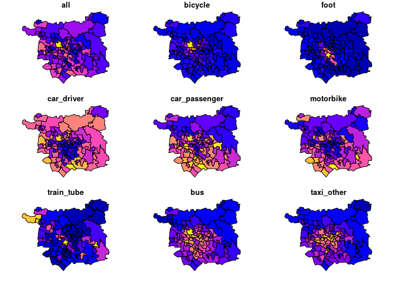
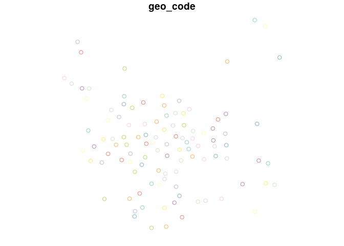
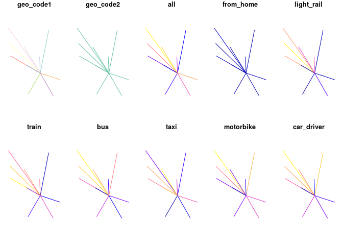
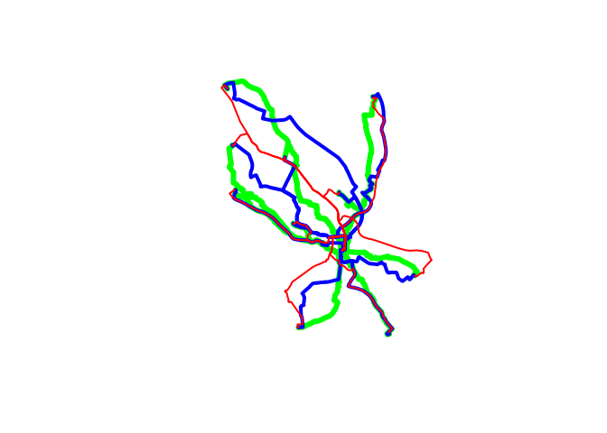
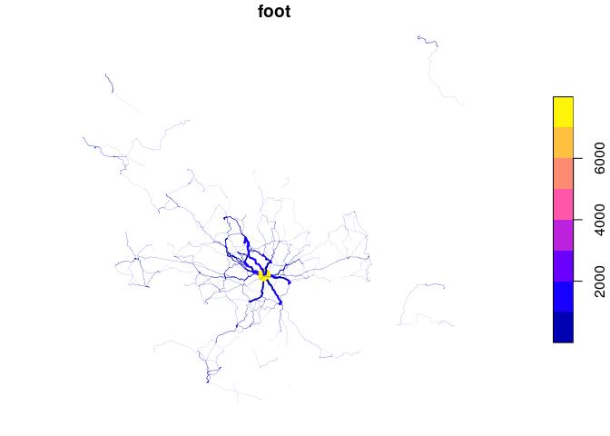
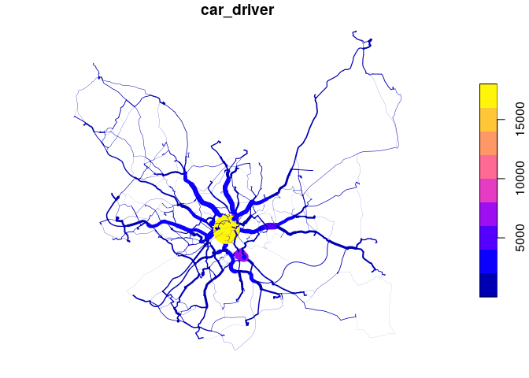
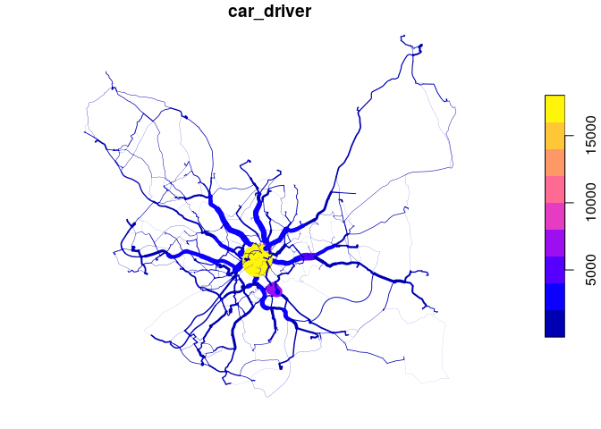
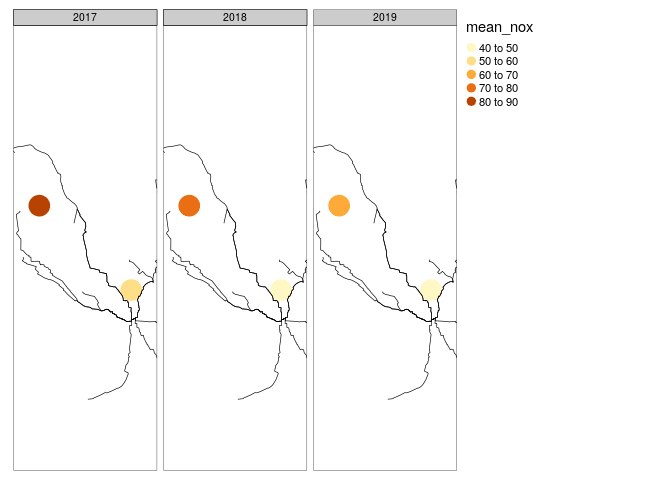

transportdata is a package containing transport datasets for teaching, methodological research and software development (e.g. for benchmarking). The aim is for it to be for people working with transport data what spData, a package used for teaching and demonstrating spatial data methods, is for people working with spatial data. The package will be especially useful for transport/mobility researchers using R.
1 Installation
Install the development version from GitHub with:
# install.packages("devtools")
devtools::install_github("ITSLeeds/transportdata")2 Datasets
The datasets included in the package, and code chunks used to create them, are outlined below. After you have installed the package, the datasets should be available.
To reproduce the following code, you will need to to have installed a number of packages. The following packages must also be loaded:
2.1 Origin-destination data
OD data is arguably the most fundamental type of data for representing city to global transport systems. The OD dataset used for this package represents the number of commutes between a subset of desire lines between administrative zones in Leeds, UK. The dataset was generated as follows:
2.2 Zone data
z = pct::get_pct_zones("west-yorkshire", geography = "msoa")
zones_leeds = z %>%
filter(lad_name == "Leeds") %>%
select(geo_code:taxi_other, dutch_slc)
usethis::use_data(zones_leeds)
dim(zones_leeds)
#> [1] 107 15
names(zones_leeds)
#> [1] "geo_code" "geo_name" "lad11cd" "lad_name"
#> [5] "all" "bicycle" "foot" "car_driver"
#> [9] "car_passenger" "motorbike" "train_tube" "bus"
#> [13] "taxi_other" "dutch_slc" "geometry"
plot(zones_leeds[5:14])
#> Warning: plotting the first 9 out of 10 attributes; use max.plot = 10 to plot
#> all
2.3 Centroid data
dim(centroids_leeds)
#> [1] 107 2
names(centroids_leeds)
#> [1] "geo_code" "geometry"
plot(centroids_leeds)
2.4 Route data
The route data was generated as follows:
od_interzonal = od_leeds %>%
filter(geo_code1 != geo_code2)
desire_lines_leeds = od::od_to_sf(od_interzonal, centroids_leeds)
#> 0 origins with no match in zone ids
#> 0 destinations with no match in zone ids
#> points not in od data removed.
desire_lines_leeds_10 = desire_lines_leeds %>%
top_n(n = 10, wt = all)
plot(desire_lines_leeds_10)
#> Warning: plotting the first 10 out of 18 attributes; use max.plot = 18 to plot
#> all
# get route data for top 10 routes for different modes
routes_leeds_foot_10 = route(l = desire_lines_leeds_10, route_fun = route_osrm, osrm.profile = "foot")
routes_leeds_bike_10 = route(l = desire_lines_leeds_10, route_fun = route_osrm, osrm.profile = "bike")
routes_leeds_car_10 = route(l = desire_lines_leeds_10, route_fun = route_osrm, osrm.profile = "car")
plot(routes_leeds_foot_10$geometry, lwd = 6, col = "green")
plot(routes_leeds_bike_10$geometry, lwd = 4, col = "blue", add = TRUE)
plot(routes_leeds_car_10$geometry, lwd = 2, col = "red", add = TRUE)
You can get the full routes as follows:
routes_leeds_foot = get_td("routes_leeds_foot")
#> Reading in the file from https://github.com/ITSLeeds/transportdata/releases/download/0.1/routes_leeds_foot.Rds
routes_leeds_bike = get_td("routes_leeds_bike")
#> Reading in the file from https://github.com/ITSLeeds/transportdata/releases/download/0.1/routes_leeds_bike.Rds
routes_leeds_car = get_td("routes_leeds_car")
#> Reading in the file from https://github.com/ITSLeeds/transportdata/releases/download/0.1/routes_leeds_car.Rds
rnet_leeds_foot = overline(routes_leeds_foot, "foot")
plot(rnet_leeds_foot["foot"], lwd = rnet_leeds_foot$foot / 500)
rnet_leeds_bike = overline(routes_leeds_bike, "bicycle")
plot(rnet_leeds_bike["bicycle"], lwd = rnet_leeds_bike$bicycle / 500)
rnet_leeds_car = overline(routes_leeds_car, "car_driver")
plot(rnet_leeds_car["car_driver"], lwd = rnet_leeds_car$car_driver / 500) 

2.5 Air quality data
Data on air quality was obtained as follows:
install.packages("openair")
library(openair)
all_sites = importMeta()
# View(all_sites)
all_sites_sf = sf::st_as_sf(all_sites, coords = c("longitude", "latitude"), crs = 4326)
leeds_sites = all_sites_sf[zones_leeds, ]
headingley = importAURN(site = "LED6", year = 2017:2019, pollutant = c("nox", "no2"))
summary(headingley)
table(headingley$site)
air_quality_leeds_raw = importAURN(site = leeds_sites$code, year = 2017:2019, pollutant = c("nox", "no2"))
air_quality_leeds = right_join(leeds_sites, air_quality_leeds_raw)
usethis::use_data(air_quality_leeds, overwrite = TRUE)
library(openair)
dim(air_quality_leeds)
#> [1] 52560 7
names(air_quality_leeds)
#> [1] "site" "code" "site_type" "geometry" "date" "nox"
#> [7] "no2"
table(air_quality_leeds$site)
#>
#> Leeds Centre Leeds Headingley Kerbside
#> 26280 26280
air_quality_leeds %>%
sf::st_drop_geometry() %>%
filter(site == "Leeds Centre") %>%
TheilSen(pollutant = "no2", ylab = "NO2 (ug/m3)", deseason = TRUE, main = "Leeds Centre")
#> [1] "Taking bootstrap samples. Please wait."
air_quality_leeds %>%
sf::st_drop_geometry() %>%
filter(site == "Leeds Headingley Kerbside") %>%
TheilSen(pollutant = "no2", ylab = "NO2 (ug/m3)", deseason = TRUE, main = "Leeds Headingley Kerbside")
#> [1] "Taking bootstrap samples. Please wait."

air_quality_summary = air_quality_leeds %>%
group_by(site, year = substring(date, 1, 4)) %>%
summarise(
mean_no2 = mean(no2, na.rm = TRUE),
mean_nox = mean(nox, na.rm = TRUE)
)
#> `summarise()` regrouping output by 'site' (override with `.groups` argument)
library(tmap)
tm_shape(air_quality_summary, bbox = tmaptools::bb(air_quality_leeds, 1.5)) +
tm_dots("mean_nox", size = 5) +
tm_facets(by = "year", nrow = 1) +
tm_shape(routes_leeds_foot_10) +
tm_lines() 
3 Code of Conduct
Please note that the transportdata project is released with a Contributor Code of Conduct. By contributing to this project, you agree to abide by its terms.